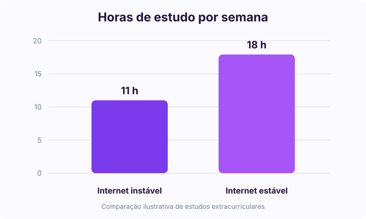
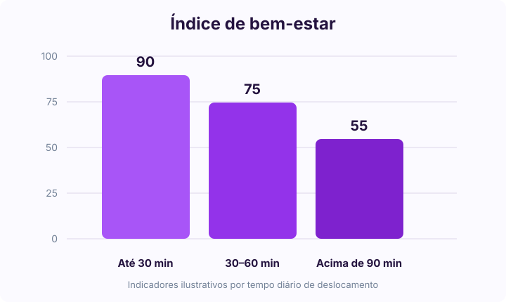

Diagnóstico das condições de vida, socioeconômicas e educacionais de jovens para embasar políticas públicas e ações práticas.
Ver Gráficos e DadosEste projeto utiliza a ciência de dados e a linguagem Python para mapear a realidade juvenil. O objetivo é transformar dados primários e secundários em insights acionáveis, gerando propostas reais para a melhoria do ensino e do bem-estar social.
Análise de renda familiar, habitação e o nível de acesso à internet estável.
Mapeamento de frequência escolar, evasão e horas dedicadas aos estudos.
Indicadores de saúde mental, tempo de deslocamento diário e lazer.
Resultados obtidos através do tratamento de dados realizado no Google Colab utilizando as bibliotecas Pandas, Seaborn e Matplotlib.

Gráfico aguardando imagemO cruzamento de dados demonstra que jovens sem acesso estável à internet dedicam menos horas aos estudos extracurriculares devido à falta de material de apoio rápido.

Gráfico aguardando imagemAnálise correlativa indicando que tempos de deslocamento superiores a 1 hora e meia impactam negativamente os índices de bem-estar emocional reportados.
Soluções práticas desenhadas a partir das carências identificadas na análise de dados.
Criação e ampliação de polos comunitários de estudos. Espaços físicos equipados com computadores e internet de alta velocidade gratuitos para jovens de baixa renda realizarem tarefas e pesquisas.
Implementação de programas estruturados de mentoria estudantil e acompanhamento psicossocial contínuo dentro das escolas públicas, visando mitigar os índices de evasão escolar e depressão.
Integração de cursos rápidos de capacitação técnica essencial (programação, análise de dados e habilidades digitais) ao currículo tradicional, focando na empregabilidade e inserção imediata no mercado de trabalho.